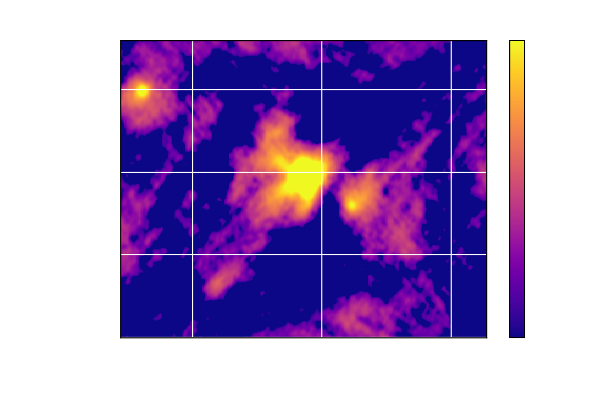

BACKGROUND
This summer at the Center for Interdisciplinary Research in Astrophysics, I used polarization data from ALMA to characterize protostar Per-emb-11.
After a star is born, it enters its protostellar phase in which it continues to collect mass from its parent molecular cloud. Within this phase, there are several stages that represent the evolutionary path of low-mass stars. The protostar in this paper is a Class 0, meaning it is beginning to centrally collapse while mass is being accreted onto a surrounding disk that will pass this mass onto the star (Dunham et al. 2014). Much of this process is governed by the magnetic fields, as well as gravity and turbulence. The magnetic field surrounding the protostar determines the alignment of dust in its environment.
In order to understand the physical mechanisms at play, observers can use polarization data to infer the morphology of the magnetic field, a characteristic of young stars that had previously been elusive. Dust grains that interact with these field lines can experience magnetic braking, where they lose angular momentum and inhibit the protostar’s disk formation. With the Atacama Large Millimeter Array (ALMA), observers have the ability to analyze polarization data for protostellar systems that are deeply embedded in envelopes of dust and gas.
The issue that observers have run into is that the grains do not align as expected by magnetic braking. It is possible that the central material is so dense that collisions affect dust grain alignment or it is due to how young the source is, or both. Dust self-scattering is another mechanism that affects polarization in young sources and it can also be used to learn more about the magnetic field (Kataoka et al. 2015}. This paper will focus on polarization data from Per-emb-11, also known as IC348 MMS. The Per-emb-XX designation originates from Enoch et al(2009). This protostar is part of a protostellar system in the IC 348 region, first detected via its molecular H2 outflows (Eisloffel et al. 2003). Cox et al. (2018) found signatures of dust-self scattering in this source, making it a good candidate to perform multi-wavelength polarization studies with. The goal of this investigation is to understand how much dust is present in the environment of this protostar, how much scattering exists, and how we can isolate how much these mechanisms contribute to what we are seeing.
METHODS
Observations
Observations of Per-emb-11 were made with ALMA on September 17, 2019 (PI: Erin Cox). Per-emb-11 has a Right Ascension of 03:43:57.065 and a Declination of $+$32:03:04.788. The restoring beam FWHM major axis is 0.593 arcseconds. The restoring beam FWHM minor axis is 0.443 arcseconds. The position angle of the source is -6.48 degrees. Data from the observations were reduced manually using the Common Astronomy Software Applications (CASA) package Mcmullin et al. 2007), version 5.3.1. The calibrations of the data were done in the usual way (e.g., Cox et al. 2018) with sufficient parallactic angle coverage to allow for calibration of the D-terms. Since polarization observations require a long integration time, the Stokes I emission was bright enough to perform two iterations of phase-only self-calibration on the source over the integration time. This was done to improve the signal-to-noise ratio of the images. The total on-source integration time was about 36 minutes.
Data Analysis
In order to understand the nature of the dust surrounding Per-emb-11, we can analyze polarization observations. As mentioned in the introduction, there are several mechanisms that affect polarization data; one of these being self-scattering. The contribution of dust self-scattering is more significant at shorter wavelengths, so we can use multi-wavelength polarization observations to constrain the contribution from scattering. Additionally, scattering models predict a distinct result that relies heavily on the maximum size of the dust grains in the disk surrounding the protostar (e.g., Kataoka et al. 2016). This prediction provides a useful way to measure dust grain growth in young stars by giving us a way to measure the spectral index that is independent of the traditional method.
RESULTS
The first step was to isolate the data from ALMA into its individual Stokes parameters, which describe the polarization state of the electromagnetic radiation from Per-emb-11. From the Stokes I or the total dust emission, the peak value of the flux density was measured to be 16.63 mJy/beam at 3mm. This was measured with a standard deviation error of 0.4425 mJy/beam. The image above shows the Stokes I signature of Per-emb-11. Next, an image for the polarization intensity was constructed using the other parameters Q and U. Using those same parameters, an image for the polarization angle was constructed.
A Spectral Energy Distribution of Per-emb-11 was plotted using peak values measured at several wavelengths, as shown in Figure 1. The centimeter data measured are upper limits. Emission at centimeter wavelengths has been shown to trace the free-free emission from protostars (Tychoniec et al. 2018). Since only upper limits are observed, we can conclude that all flux in Per-emb-11 is thermal dust emission. With the millimeter data, we fit a power law to find the spectral index and consequently the dust opacity. The spectral index is 2.55, which corresponds to a dust opacity value of 0.55. The dust opacity gives observers an idea of how much grain growth has occurred and the size of said grains. A dust opacity value ~0.5 corresponds to large grains, which means the data suggests there are large grains present in the Per-emb-11 protostellar environment. To confirm these characteristics of Per-emb-11, more analysis is needed.
In the future, we can use the polarization intensity, angle, and percentage to make a more detailed image that can illuminate the morphology of the magnetic field in Per-emb-11. Understanding the magnetic field and dust content in Per-emb-11 can shed light into the process of planet formation.ABOUT ME

My name is Micaela Foreman and I'm a rising senior studding Astrophysics and English at Williams College. I'm from Chicago, IL, so it has been a joy to spend the summer in Chicagoland area working at Northwestern. Thank you to Dr. Erin Cox and Dr. Giles Novak, amoung many others, for their support in conducting research on star and planet formation. Contact Info: msf4@williams.edu